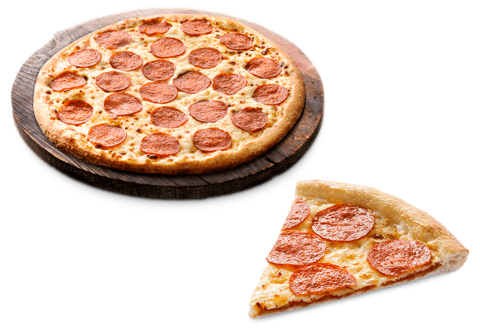

over pizza

Een pizza is Italiaans eten. Het is een platte schijf van deeg met meestal tomatensaus en kaas.
met vaak ook andere ingrediënten. De pizza is bedacht in Napels.
Pizza Pepperoni, er word vaak gedacht dat het hetzelfde zou zijn als de pizza salami.
Dit is echter niet het geval. Pepperoni is namelijk gemaakt door onder andere paprika en heeft een scherpere smaak dan salami.
Salami word daarom ook meestal op brood gebruikt.